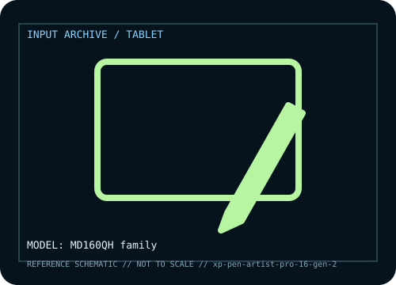

[ PEN TABLETS AND DIGITIZERS // IDENTIFIED COMPONENT ]
XP-Pen Artist Pro 16 Gen 2
16-inch pen display with high-resolution panel, pressure pen and shortcut controls.

MODEL IDENTIFICATION: Manufacturer model / identifier: MD160QH family. Compare the unit label, regional suffix, and revision against manufacturer documentation before repair or compatibility claims.
Model specifications
| Catalog subcategory | Pen tablets and digitizers |
|---|---|
| Exact model / ID | MD160QH family |
| Model-specific features | 16-inch 2.5K-class panel, X3 Pro stylus, pressure/tilt and shortcut keys; bundle varies. |
| Interface and host support | USB-C video requires DisplayPort Alt Mode; 3-in-1 cable separates HDMI, USB data and power. Driver enables pen/keys. |
| Revision / driver caveat | Distinct from Artist 16 Pro and Artist 16 2nd Gen; verify MD160QH, cable and stylus bundle. |
Preservation and service notes
Retain cable/nibs, protect matte surface from grit, log pressure curve/driver, and avoid cable bends at display.
Record the as-found label, accessories, host OS, driver or firmware version, and test method. Separate observed condition from published specifications; family-level claims are not proof of an individual unit's revision.
Manufacturer source
- XP-Pen Artist Pro 16 Gen 2 — manufacturer model pageModel-specific manufacturer reference for identifying specifications, regional SKU, and linked current support documentation.
Manufacturer pages can change or retire. Preserve the applicable manual and note its revision when documenting a physical device.